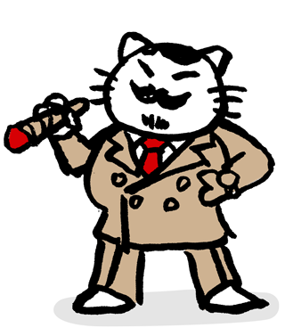
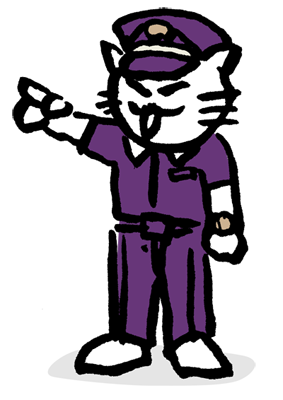

 

ぎんざRuby会議01 は Ruby地域コミュニティである Ginza.rb 主催の地域Ruby会議です。
Ginza.rb は、2013年6月に発足し、毎月第 3 火曜にミートアップを開催してきました。
皆様のおかげで、今年8月に50回目のミートアップを迎える事が出来ます。
今回、その50回目の記念として、ぎんざRuby会議01を開催いたします。
ぎんざRuby会議01のテーマは、「Ruby on Rails」です。
講演には、松田明さん、上薗竜太さんをゲストに招待します。
また、発表枠として、通常発表枠(25分)とLT枠(5分)の2枠ご用意させて頂きました。
普段Railsを使われている皆様と、Railsに関する知見や普段やられている取り組みをなどを共有し、
互いに学べる場に出来ればと考えおります。
みなさまのご参加をお待ち申し上げます。
| 12:00 |
開場 |
|---|---|
| 13:00 |
開幕のごあいさつ |
| 13:05 |
基調講演松田 明
|
| 13:50 |
スポンサーLT |
| 13:55 |
ActiveSupport::Multibyte::Unicode::UnicodeDatabase を消したかった
Fumiaki MATSUSHIMA
|
| 14:20 |
マイクロサービス指向 Rails API 開発ガイド
qsona
|
| 14:45 |
Rails を仕事にする会社で新卒が 1 年間学んだこと
Junichi Kobayashi
|
| 15:10 |
Afternoon Break |
| 15:35 |
Spring Frameworkと比較して学ぶ、Webアプリケーションフレームワークの責務分割
onigra
|
| 16:00 |
Railsアプリケーションのパフォーマンス改善手法
k0kubun
|
| 16:25 |
スポンサーLT |
| 16:30 |
LT Time
|
| 17:00 |
休憩 |
| 17:10 |
スポンサーLT |
| 17:15 |
基調Q&A
上薗 竜太
|